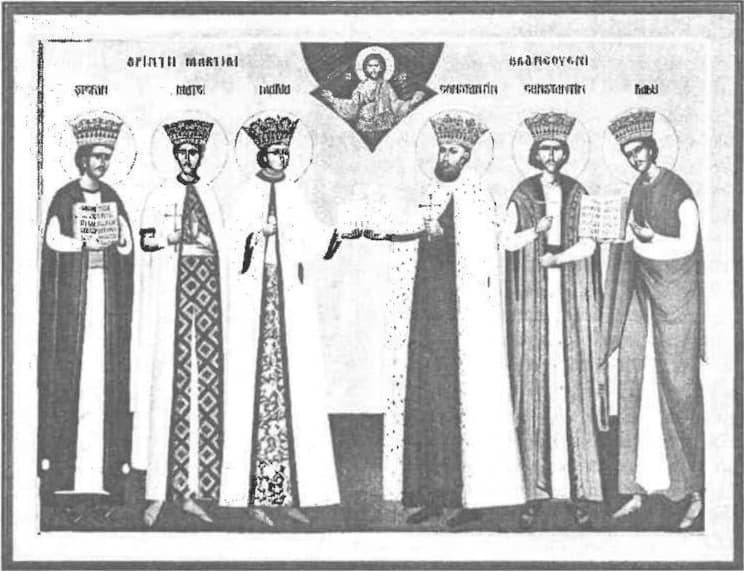

„Slujba mea este să îndur nevoile și să rabd năpăștile și chiar să-mi vărs sângele în numele lui Hristos și al Domnului nostru Dumnezeu, pentru credință, pentru Una, Sfântă, Ortodoxă și Apostolească Biserică.”
Importanța voievodului Țării Românești Constantin Brâncoveanu o vedem cel mai bine astăzi, când avem posibilitatea de a înțelege mult mai bine cele întâmplate în trecut, Constantin Brâncoveanu fiind ultimul domn ortodox al românilor de pretudindeni, care prin întreaga sa viață a definit în chip ortodox desăvârșit cultura politică românească, într-o perioadă tulbure din punct de vedere politico-militar, în care imperiile se angajau în războaie sângeroase pentru dominarea culturală, teritorială și economică la începuturile unei epoci dominate de crescânda industrializare și dorința de a forma o conducere unitară a Europei și a lumii, afirmată la începuturile secolului al XVIII-lea în primele loji masonice. În acest context, Constantin Brâncoveanu reușește să se mențină în scaun între anii 1688-1714, aducând Țara Românească pe cele mai înalte culmi ale credinței, culturii și civilizației până în momentul respectiv.
Situația politică europeană - aspecte vizibile
Între sfârșitul de secol XVII, marcat prin asediul eșuat al turcilor asupra Vienei (1683) și de pacea de la Karlowitz (1699), și începutul de secol XVIII, țările române au fost vreme de 16 ani teatrul operațiunilor militare și obiect al tratatelor de pace dintre Imperiul Otoman și Imperiul Habsburgic. Austriecii, ca membri în Marea Ligă (Austria, Veneția, Polonia și Rusia), se aflau în perioada 1678-1687 în război cu Franța și care era la momentul respectiv cea mai însemnată putere europeană, care încheiase o alianță diplomatică cu Constantinopole, împotriva habsburgilor1.
Turcii erau încă foarte puternici și se mențineau în Balcani, în ciuda gravelor înfrângeri suferite în fața armatelor austriece după Asediul Vienei din 1683, la Buda în 1686 și Zenta în 1697, fiind încă la apogeul expansiunii teritoriale.
Imperiul Habsburgic se auto-proclamă eliberator al popoarelor subjugate de turci, dar în realitate urmărea propriile sale interese de expansiune teritorială și subjugare a popoarelor care făceau parte din Imperiul Otoman, supunându-i pe „eliberați” la o cruntă oprimare socială, națională și religioasă.2
În est, Rusia își revendică titlul de „a treia Romă), continuatoare a Imperiului Bizantin, arogându-și dreptul de a cuceri Constantinopolul, dorind să stăpânească strâmtorile Bosfor și Dardanele, sub masca eliberării ortodocșilor din Balcani.3
Suedia, sub tânărul și aventurosul ei rege, Carol al XII-lea, se lansează într-o campanie care să-i întărească hegemonia pe plan european. Ocupă Danemarca într-un an și dă o lovitură grea rușilor în bătălia navală de la Narva (30 nov 1700), făcând jocul Franței și totodată al Austriei, care, deși aliată cu Rusia, dorea slăbirea ei în eventualitatea unei intervenții în Balcani. La Poltava (8 iulie 1709), Carol al XII-lea pierde în fața Țarului Petru cel Mare, bătălia marcând sfârșitul tendințelor expansioniste suezede.4
Anglia, sub domnia regelui William al III-lea de Orania, deși aliată cu Imperiul Habsburgic și cu Rusia, era prietenă cu Poarta, încercând o politică de echilibru și stabilitate. Datorită asemănării politicii externe a Angliei și a Țării Românești, Constantin Brâncoveanu a găsit un sprijin în consolidarea poziției valahe în teatrul de război sud-est european în Lordul William Paget, al VI-lea baron de Beaudesert, ambasador la Constantinopole, între 1692 și 1702, fapt susținut de corespondența dintre domnitorul muntean și ambasadorul englez.5
Situația internă
În perioada 1654-1678, de la moartea lui Matei Basarab până la înscăunarea lui Șerban Cantacuzino, țara a fost condusă de opt domnitori pentru intervale scurte de timp, climatul politic caracterizându-se în general prin instabilitate puternică, răscoale ale seimenilor și dorobanților, precum și luptele dintre familiile boierești (în special Cantacuzini și Băleni) cu diverse intrigi peste hotare, având ramificații până la Constantinopol, incluzând deposedări de averi și crime, slăbind țara din interior și făcând-o expusă pretențiilor de cucerire fie otomane, fie austriece. În politica externă se observă un efort de menținere a poziției țării în conjunctura dominației otomane și a pretențiilor imperiale.6
Urcarea la tron a lui Șerban Cantacuzino (unchiul lui Constantin Brâncoveanu) în 1678 face lucrurile să se mai liniștească. Datorită înțelepciunii, curajului și spiritului diplomatic ascuțit, noul domnitor urmărea eliberarea Țărilor Române, apărând interesele tuturor românilor și ale ortodocșilor din Balcani, căutând să formeze un front antiotoman al celor trei țări române pe baza unor înțelegeri bilaterale (1685-1686) cu Constantin Cantemir, domnul Moldovei și Mihai Apafi I, principele Transilvaniei. Acțiunile sale s-ar fi extins prin tratatul semnat cu Țarul Petru cel Mare al Rusiei la 28 decembrie 1688, prin care era recunoscut ca „voievod și suveran al tuturor ortodocșilor creștini”, atât al celora din nordul Dunării, cât și a celora din sud.7 Politica sa îi va face adversari, chiar din rândul familiei sale, fapt care îi va aduce moartea în 1688.8
Copilăria și tinerețea
Constantin s-a născut în anul 1654, în satul Brâncoveni, fostul județ Romanați, fiind nepot al voievodului Șerban Cantacuzino. A rămas orfan de mic, tatăl său fiind omorât în februarie 1655, în timpul răscoalei seimenilor și dorobanților, ridicați împotriva domniei, fapt care îl va afecta pentru toată viața. Astfel, Constantin a fost crescut de mama sa, de bunica după tată, Păuna Greceanu, și de unchiul său, stolnicul Constantin Cantacuzino, care i-au oferit o educație profund creștină și intelectuală. Copilăria și-a petrecut-o în casele părintești din București, deprinzând carte grecească și latinească, fiind de mic foarte studios, devenind astfel domnul intelectual de mai târziu.9
Alegerea ca domn
Murind cei doi frați ai săi mai mari, toată moștenirea părintească rămâne tânărului Cantacuzino. Se căsătorește cu Marica, nepoata lui Antonie Vodă din Popești. În 1678, unchiul său, Șerban Cantacuzino ajunge domnitor, astfel că tânărul Constantin este înaintat vel-logofăt, cea mai înaltă treaptă a ierathiei boierești. A fost nevoit să primească ungerea ca domnitor, la aceasta contribuind boierii țării, împreună cu mitropolitul Teodosie și cu Patriarhul Ecumenic, cu toții prețuindu-l pentru că era, după cum spune cronicarul Radu Greceanu, „cu daruri vrednice împodobit”.
La cererea boierilor, „Logofete, noi cu toții pohtim să ne fii Domn!”, Brâncoveanu răspunde: „Dar ce aș avea eu cu Domnia? De vreme ce ca un Domn sînt la casa mea, nu-mi trebuiește să fiu! Boierii au insistat: „Ne rugăm, nu lăsa țara să intre alți oameni, sau răi, sau nebuni, să o strice, ci fii”” […] Vodă începe să le explice: „Dumneavoastră bine știți cu toți că eu am fost la casa mea ca un Domn, trăit-am cum am vrut, nimica lipsindu-mi, și Domnia aceasta eu nu o pohtesc, ca să-mi înmulțesc grijile și nevoile, ci dumneavoastră m-ați pohtit și fără voia mea m-ați pus Domn în vremi ca acestea turburate, înconjurate de oști și de vrăjmași. Ci dar acum trebuiește cu voia tuturor! Iar boierii cu toți slujitorii au răspuns în cor: „Toți voim, toți pohtim!” Atunci, Brâncoveanu îi legă cu jurământ „Dacă pohtiți toți, mi-e voia și mie. Să-mi dați un jurământ înaintea lui Hristos, precum că veți fi cu dreptate, și de ar veni vreo primejdie Domniei mele de spre vreo parte, să stați cu mine toți” Zis-au: „Să fie așa!"10 Iar de bucurie îl „luară de mâini și-l împingeau de spate în fața altarului.”11
O cronică anonimă care a fost găsită la Chișinău în 1856 de Ierodiaconul Daniil și al cărui text a fost editat în 1858, ne relatează mai pe larg formalitățile boierești de numire a domnului: „După aceea, Constantin Vodă, întorcându-se la curtea domnească, împreună cu toți, făcut-au sfat și socoteală, și au trimis boieri la Poartă la împărăție, anume: pre Gincea vel-vornic, Alexandru vel-clucer, Pârvu Cantacuzino logofăt, Preda Brăteșeanu și alți boieri mulți, cu arnăuți de la toată țara, dând știre pentru domnia măriei sale. Iară pre alți boieri, anume: pre Dumitrașco Karamanlă vel-postelnic, Socu vel-medelnicer, Vergu vel-spătar, capuchehaia pre lângă serdaru fiind, au trimis la pașa serdaru, anume Mustafa Pașa, care era cu oștile la Baba. Așișderea pre alți boieri anume Mihalcea șetraru, Constantin Ciorogărleanu clucer, au mai trimis la Hapu Selim-Gerei, întâmplându-se a fi și el atuncea în Buceac. Deci după ce au mers boierii la poartă și au făcut știre la împărăție cum nu poftește țara pre altul fără cât numai pre măria sa, dat-au Dumnezeu și împărăției postavul și au lăsat după a țării poftă pe alegere și rugăciune, și numai decât și Skimni-Aga au trimis anume pre Ismail Aga capuchehaia al vizirului, cu caftanul de domnie."12
La o lună de la alegerea sa ca domn, Constantin Brâncoveanu avea să scrie: „Cu voia și cu sfatul părintelui vlădica (mitropolitul) și egumenilor și a boierilor și al tuturor căpeteniilor și a toată țara rugându-mi-se, ne-au rădicat domn, iar domnia-mea aceasta nu aș fi pohtit […] că de nici unile lipsă n-am fost, ci ca un domn eram la casa mea, ci numai pentru rugăciunea tuturor […] și pentru ca să nu vină niscai străini domni asupra țărăi și a săracilor să-l necăjească făr-de-milă și să pustiiască țara, pentru aceia am luat domnia mea jugul acesta asupra domniei mele.”13 Iar secretarul personal al domnului muntean, Antonio Maria Del Chiaro, spune că „Brâncoveanu a refuzat cu toată puterea, conjurând și rugând cu lacrimi în ochi, să fie lăsat la casa sa, unde putea trăi ca un domn.”14
Pentru prima dată în istorie întâlnim un domn cu o atât de profundă înțelegere duhovnicească a domniei: când i-a fost oferită, s-a smerit, a încercat să o refuze, dar pentru că țara l-a cerut și era nevoie de el, s-a smerit până la capăt, tăindu-și propria voie și ajungând pe cea mai înaltă treaptă a smereniei: ascultarea de cei mai mici decât tine. Știa că așa a fost voia lui Dumnezeu și a poporului, împotriva propriei voiri. Trebuia să-și asume crucea! Parcă avea în inimă și în minte cuvintele Mântuitorului Care zice: „…care între voi va vrea să fie mare să fie slujitorul vostru. Și care între voi va vrea să fie întâiul să vă fie vouă slugă."15
Voievodul se dovedește a fi conștient de crucea grea pe care o luase pe umerii săi pentru Hristos și neamul său, după cum rezultă dintr-o scrisoare adresată Țarului Petru cel Mare al Rusiei: „slujba mea este să îndur nevoile și să rabd năpăștile și chiar să-mi vărs sângele în numele lui Hristos și al Domnului nostru Dumnezeu, pentru credință, pentru Una, Sfântă, Ortodoxă și Apostolească Biserică."16
Omul de cultură
Nicolae Iorga evocă spiritul academic al domnitorului, care s-a remarcat ca un mare om de cultură, prin înființarea Academiei Domnești de la Sfântul Sava în 1694 cu predare în limba greacă, prin care Constantin Brâncoveanu pune bazele învățământului superior în Țara Românească și prin activitatea de cărturar ce cuprindea traducerea și tipărirea cărților de cult și a scrierilor Sfinților Părinți.
Datorită organizării moderne, Academia (numită și grecească după limba de predare) corespundea unei Facultăți de filosofie și litere din cadrul Universităților europene, se bucura de un mare prestigiu, devenind un far de lumină pentru Țara Românească, dar și pentru întreg sud-estul Europei, fiind prezenți aici și tineri greci, bulgari, sârbi și aromâni. Se stabilesc și relații cu marile universități europene ale vremii, mai ales cu scopul de a propovădui Ortodoxia în occidentul catolic și protestant, Brâncoveanu trimițând teologi mai ales la Oxford și Cambridge.17
Om foarte învățat, după cum se vede din prefața Bibliei de la 1688 — tradusă și tipărită din inițiativa lui, când era mare logofăt, Domnitorul cunoștea foarte bine lucrările lui Ioan al VI-lea Cantacuzino, ale părinților pustiei precum și ale sfinților Grigorie Teologul și Ioan Gură de Aur — ale cărui lucrări au fost traduse parțial din grecește în română chiar de Brâncoveanu în cadrul Academiei.18
De la curtea domnească nu lipsesc fețele bisericești: Dionisie al IV-lea Sirigul, care-l unsese ca domn în 1688, patriarhul Dosotei al Ierusalimului și episcopii Bisericii grecești aflați în exil (Astfel se explică mulțimea donațiilor făcute în bani, moșii, odoare, cărți, tipografii și obiecte bisericești românilor din Transilvania, Patriarhiei Ecumenice, Mănăstirilor din Athos, locurilor sfinte de la Ierusalim, de la Muntele Sinai, Patriarhiilor din Antiohia și Alexandria, mănăstirilor și bisericilor de peste Dunăre, din Serbia, Bulgaria etc.).19 20
Brâncoveanu Vodă și familia sa a avut o relație deosebită și cu Hrisant Notara, viitorul patriarh al Ierusalimului, prieten intim al familiei, încă din vremea când acesta era arhimandrit. Trăind un timp la curtea lui Brâncoveanu ca profesor al fiilor săi, va deveni omul de încredere al Doamnei Maria Brâncoveanu, după moartea domnitorului în 1714.21 Tot în București, la instalarea lui Antim Ivireanu ca mitropolit, era și patriarhul Alexandriei, Gherasim Palados, împreună cu patriarhul Hrisant Notara. Din 1700 până la 1704 la curtea lui Constantin Vodă este prezent și patriarhul Alexandriei, Atanasie al II-lea, pe care la plecare l-a înzestrat cu tiparnița arăbească de la Snagov.22
Un bun cunoscător al scrierilor Sfinților Părinți, se implică în traducerea, editarea și tipărirea scrierilor sfinte și ale cărților de cult — Biblia, Liturghierul, Apostolul, Triodul, Penticostarul, Octoihul și Mineele.
„Toate aceste cărți s-au scos cu banii lui Vodă Brâncoveanu și ai Mitropolitului Antim, ale căror nume se cade să nu le ștergem niciodată din mintea noastră căci ostenelile lor au făcut să înțelegem noi astăzi tot ce se citește în sfânta biserică. Cei care au dat mai târziu pe românește cărțile de slujbă, care rămăseseră netipărite, n-au întâmpinat greutăți mari căci le era calea netezită de cei mai sus pomeniți.”23
Susținerea românilor transilvăneni
Constantin Brâncoveanu ca și alți domni români și împreună cu ei toată românimea își dau seama de lovitura ce au dat-o și vor să o dea catolicii Bisericii Ortodoxe și de aceea ei veghează la intrigile și meschinăriile catolicilor din Transilvania, care își îndreaptă acum ochii către români, de vreme ce pierduseră pe mulți dintre unguri, trecuți la calvinism.24
„Strictul, severul și fanaticul [dreptul25 — n.n] apărător al Ortodoxiei”26, după cum îl numea Nicolae Iorga, a desfășurat o amplă activitate anticatolică și antieretică, susținând lupta românilor din Transilvania și combaterea uneltirilor papistășești făcute prin crearea Bisericii Greco-Catolice, care amenința adevărata unitate a neamului românesc, care este posibilă doar în Ortodoxie, Biserica Ortodoxă păstrând unitatea națională a românilor prin caracterul ei de biserică națională, în ciuda despărțirii lor politice, combătând erezia catolică a supremației papale.
Constantin Brâncoveanu chiar trimite o scrisoare brașovenilor prin care îi îndeamnă să rămână întru credința ortodoxă necurmată, și îi sfătuiește pe brașoveni să le spună oamenilor că episcopul Ardealului care s-a dat în erezia papistașă, nu are voie să supună credincioșii bisericii de la Roma.27
Românii nu erau singuri în această luptă. Erau susținuți de arhiererii greci de la curtea lui Brâncoveanu, care „se luptau cu cuvântul și cu scrisul împotriva papistașilor, care atunci au făcut pe o parte din frații noștri din Ardeal de s-au unit cu Papa de la Roma.”28
Politica Brâncovenească
După cum a existat o epocă a lui Mircea cel Bătrân, Ștefan cel Mare, Mihai Viteazul sau Matei Basatab, mărețe prin amploarea faptelor lor politice sau militare, tot așa a existat o epocă a lui Constantin Brâncoveanu. Aceasta se deosebește însă de celelalte prin natura metodelor politice, Brâncoveanu Vodă încheind epoca voievozilor războinici și începând etapa negocierilor diplomatice și a stabilirii de relații personale cu conducătorii politici ai lumii de atunci.
Dacă până la Brâncoveanu, Țara Românească a fost doar un stat tampon, care era angajat mereu în războaie, oferind Europei răgazul de a dezvolta cultura și artele, în timpul Epocii Brâncovenești, statutul Țării Românești se schimbă prin încetarea acțiunilor militare, țara devenind leagăn de cultură românească și de Ortodoxie.
Voievodul era profund conștient de realitățile politice ale secolelor XVII și XVIII, urmărind în această perioadă în care Țara Românească era prinsă fără apărare între cele trei mari imperii (Habsburg, Țarist și Otoman) o politică de pace, cu toate marile puteri.
După asediul eșuat asupra Vienei din 1683, pentru voievodul român era clar faptul că Imperiul Otoman intra într-o perioadă de decădere, dar asta nu înseamnă că trebuia subestimat, mai ales atâta timp cât turcii erau în coasta Țării Românești, ocupând tot malul drept al Dunării. Garantarea păcii pe lângă Înalta Poartă, cu aur, este văzută de unii istorici ca un act de supunere, dar era necesară într-un moment în care și țara era slăbită, la fel cum era la sfârșitul domniei lui Mircea cel Bătrân, care deși a aplicat cu 300 de ani înainte aceeași tactică precum Constantin Vodă, nu a fost criticat de istorici, ci lăudat. De ce nu merită și Vodă Brâncoveanu același lucru?29
Față de Imperiul Habsburgic care dorea extinderea sa spre sud-estul Europei, Brâncoveanu și-a manifestat intențiile de prietenie, oferind informații despre turci. Dar el a încercat un joc dublu prin care dorea slăbirea ambelor imperii. Un exemplu grăitor este expediția turcilor împotriva Imperiului Habsburgic din 1693, când le spune să atace în Ardeal, iar austriecilor să atace Belgradul, pentru a se ataca unii pe alții, fiecare slăbindu-și spatele.30
Pacea de la Carlowitz din 1699 dintre cele două imperii nu va limita planurile diplomatice ale domnului român, acesta adresând mai multe scrisori țarului Petru I în care oferea informații prețioase despre starea politică, economică și socială a Imperiului Otoman, adversarul principal al Rusiei, și propunea crearea unei alianțe anti-otomane.31 Folosirea de Rusia pentru slăbirea Porții, se evidențiază mai ales în 1702, când Brâncoveanu cere țarului să încheie un armistițiu cu Suedia, pentru a muta frontul principal pe teritoriul turcesc.
Deși după moartea sa în 1714, în Țara Românească se instalează primul domn fanariot muntean, Brâncoveanu a reușit prin diplomația lui abilă să apere țara într-un moment în care risca să dispară, păstrând-o cu prețul aurului (din buzunarele proprii) în anumite situații, oferindu-i posibilitatea de a crea propria cultură.
Relațiile cu Cantemireștii și conflictul istoric dintre Corb și Inorog
În 1705, Dimitrie Cantemir termină de scris Istoria ieroglifică, pamflet istorico-social, care transpune în fabulă acțiunile politice din Țările Române la început de secol XVIII. „Conflictul” dintre Inorog (Dimitrie Cantemir) și Corb (Constantin Brâncoveanu) a fost accentuat în viața reală de cronicarii ambelor tabere, Radu Popescu și Radu Greceanu pe de o parte și Ion Neculce pe cealaltă. Deși la prima impresie faptele par să confirme impresia de conflict, cum ar fi susținerea adversarilor lui Brâncoveanu de către Cantemirești în 1688 sau susținerea acordată de Brâncoveanu pe lângă Înalta Poartă ginerelui său, Constantin Duca, pentru ocuparea tronului Moldovei după moartea lui Constantin Cantemir în 1693. Adevărul este puțin diferit conform unui document găsit la arhivele din Atena, redactat de însuși Constantin Brâncoveanu, numit „Catastih de toate veniturile domniei ce ne va milui Dumnedzău de acum înainte și de toate cheltuielile ce vor cheltui dintr-acest venit pe cum să va scrie anume, septembrie 1 dni, leac 7218 [1709]32. Dacă Ion Neculce spunea că Antioh Cantemir este împotriva domnului muntean, atunci de ce Brâncoveanu îi încredințează o fiică cu care se căsătorește în 1705, iar relațiile dintre cei doi se consolidează după mazilirea lui Antioh Cantemir, când Brâncoveanu îi trimite bani și daruri la Constantinopol? Ajutorul este cu atât mai mare cu cât mai ales după momentul Stănilești (1711), Brâncoveanu putea fi bănuit că ajută dușmanii Porții.
Relația cu Dimitrie Cantemir a ajuns la noi într-o stare deformată de cronici, mai ales când a venit vorba de nunta Casandrei, nepoata lui Brâncoveanu, cu Dimitrie Cantemir. Dacă Neculce spune că domnul muntean a făcut totul pentru a se împotrivi, din Condica vistieriei care cuprinde cheltuielile din perioada 1694-1704, reiese că nu numai că nu s-a împotrivit, ci a și binecuvântat nunta și a trimis mirilor daruri: „două lăsturi, două hataiale cu Mori de fir, două canavețe și două sigideale și alre daruri în valoare de 460 taleri”, În plus, Brâncoveanu și-a susținut ginerele intelectual după 1711 cu bani și a intervenit chiar și pe lângă Țarul Petru cel Mare pentru a-i asigura binele în țara de exil, Rusia.33 34
Dimitrie Cantemir a fost primul domn român care s-a înscris în curentul despotismului iluminat, fiind inițiat de confratele său, marele iluminat și primul țar ne-ortodox al Rusiei, Petru cel Mare.
Brâncoveanu, ca trăitor al ortodoxiei și om de cultură, nu era străin de ideile iluminate35 ale ginerelui său, precum acceptarea ereziei catolice a primatului papal sau negarea ortodoxiei transilvănene: „religia creștinească a fost adusă pe față în Dacia abia în vremea domniei lui Constantin cel Mare, fiindcă sub Constanțiu, fiul lui Constantin cel Mare, amândouă Daciile își aveau arhiereii lor”36, „[moldovenii] nu cinstesc capul văzut al bisericii, adică pe papa”, „norodul cel prost abia poate să deosebească adevărul de înșelăciune”37, „știe oricine a învățat istoria bisericii că țara ungurească și Transilvania, unde au locuit strămoșii noștri înainte de descălecatul Moldovei [1347], nu s-au închinat niciodată scaunului de la Roma, de aceea toți locuitorii au fost și fii ai bisericii Apusului.”38
Domnul muntean a sperat că prin această alianță familială îl va putea readuce pe calea dreptei-credințe pe ginerele său, dar interesele cercurilor oculte de la începutul secolului al XVIII-lea, vor împiedica acest lucru, după cum vom vedea mai departe.
Esențial pentru înțelegerea noastră a problemei istorice este raportarea la Hristos și Ortodoxie a ceea ce am învățat la școală: în toate manualele, începând cu cele ale Școlii Ardelene39, continuând cu educația pașoptistă și în final cu cea comunistă și europeană40, Dimitrie Cantemir este unul din cei mai mari domnitori, desigur, nu prin fapte vrednic de pomenire pentru „norodul cel prost”41, ci lăudabil pentru anti-clericalismul său „cultural” și pentru relațiile sale cu marii iluminați ai vremii. Scrierile lui Cantemir au fost profund agreate de cercurile Școlii Ardelene, ale generației pașoptiste, ale aparatului de stat comunist și cel european pentru că servesc scopurilor lor oculte, elitele mondiale având o nădejde în „iluminarea” culturii române prin primul ei „apostol” heterodox. Constantin Brâncoveanu este în general scos din istorie până pe la jumătatea secolului al XIX-lea42, când Biserica își permite cu mari greutăți să publice cărți despre activitatea marelui domn ortodox. O altă perioadă pro-Brâncoveanu o reprezintă prima jumătate a secolului XX, când harismatica Generație interbelică a refăcut legătura Neamului cu ultimul său mare domnitor.
Comuniștii au avut grijă să șteargă orice urmă a ortodoxiei lui Vodă Constantin, făcându-l în scrierile lor un simplu finanțator al tipografiilor și al arhitecturii românești. Intenția de a-l face prieten cu „marele Dimitre Cantemir” (am expus mai sus motivele sincere ale domnului muntean), vine din tehnica contrastării și a asemănării personajelor istorice, folosită de Roller. Astfel, în gândirea comunistă, dacă un mare iluminat și european filo-occidental precum Dimitrie Cantemir a fost acceptat de socrul său, înseamnă că ginerele nu putea să aibă un socru mai prejos decât el în credința „iluminată” a occidentului. Același lucru s-a încercat și prin prezentarea nedocumentată pentru necunoscători, după aceleași metode rolleriene, a relațiilor domnitorului muntean cu Anglia și Rusia sub aura unei europenizări a Țării Românești, căci alfel nu s-ar putea „explica” în manualele de istorie de astăzi de ce Brâncoveanu este un „domnitor europen”.43
Mai avem de adăugat faptul că industria cinematografică comunistă nu s-a ocupat cu turnarea unui film despre viața voievodului Constantin Brâncoveanu, deși ar fi ieșit cel mai bun film istoric, dacă s-ar fi ținut cont de adevărata lui viață și de credința sa nestrămutată. Dar cum nu ar fi plăcut partidului un film despre mucenici, s-a făcut un film despre Dimitrie Cantemir prin care să se arate gradul mare de „iluminare” la care a ajuns domnitorul moldovean.
Brâncoveanu și Masoneria - cine l-a vrut mort?
Marea lui personalitate a suferi din păcate un atac recent: Marele Maestru al Marii Loje Naționale a României, d. Viorel Dănacu face următoarea afirmație îndrăzneață și mincinoasă: „Putem spune, fără a exagera, că primul român identificat în istorie ca aparținând masoneriei este dreptcredinciosul voievod Constantin Brâncoveanu, canonizat de Biserica Ortodoxă, lucru care demonstrează că masoneria română și Biserica au fost nu doar puncte de sprijin, adevărate coloane ale acestui neam, ci și în perfectă conlucrare."44
Nimic mai fals! Ce părtășie are Adevărul cu minciuna? Sau Hristos cu mamona? Sau Ortodoxia, dreapta-credință cu erezia masonică? Niciuna! Pe ce se bazează această afirmație îndrăzneață? Pe faptul că secretarul voievodului, inteligentul aventurier italian Antonio Maria del Chiaro, a fost de la un moment dat mason, înființând o lojă la Galați, în 1734, și apoi o altă la Iași, în colaborare cu domnitorul fanariot Constantin Mavrocordat.
Este de spus că Antonio Maria del Chiaro, înclina să admire la Constantin Brâncoveanu mai degrabă abilitatea politică decât evlavia religioasă, n-ar fi ezitat, desigur, să-și atragă stăpânul în masonerie, dar totuși cu această condiție minimală: ca masoneria să fi existat pe vremea când el era tânăr secretar al voievodului valah. Or, cât de activ mason ar fi fost italianul mai târziu, fapt este că, după toate istoriile autorizate ale Masoneriei, primele structuri masonice moderne apar în Occident abia la 1717 (Anglia și Franța), în vreme ce voievodul român a fost martirizat de către turci la 1714! Masonii români ar voi să ne convingă, așadat, că Brâncoveanu, ar fi fost inițiat în masonerie mai înainte ca aceasta să se fi înființat ca atare la Londra și la Paris, și ar fi fost de neconceput ca un om cu o asemenea cultură duhovnicească să se facă părtaș la a doua răstignire a lui Hristos, prin erezie.45
Canonizarea voievodului în 1992 de către BOR este de fapt o întărire a Hotărârii Sfântului Sinod al Bisericii Ortodoxe Române din 1937, prin care este condamnată Francmasoneria ca erezie, pentru că Brâncoveanu, din cele ce vom vedea, a fost ucis de masoni!
Desigur, argumentația lui Răzvan Codrescu este necesară doar în parte, dar nu este deloc suficientă, pentru că structurile masonice, ale închinătorilor la lucifer, sunt cu mult mai vechi de 1714, anii 1717 și 1776 fiind doar date oficiale de înființare ale Masoneriei, respectiv ordinului Illuminati ca societăți secrete ce funcționează pe baza unei constituții scrise. Ele sunt urmașele ordinelor cavalerești medievale și ale camarilelor dinastice europene. A crede că nu exista oculta masonică înainte de 1717 este o mare greșeală. Nu putem accepta idei precum că Basarab I, Mircea cel Bătrân, Ștefan cel Mare, Mihai Viteazu, Constantin Brâncoveanu, Tudor Vladimirescu sau Avram Iancu și alți eroi ai Neamului să fie masoni, căci nu a îndeplinit niciunul două condiții minimale pentru a fi un bun lider mason: închinarea în orice formă la Beelzebut și setea de putere și de expansiune în scopul stăpânirii întregii lumi. Xerxes, Alexandru cel Mare, Caesar, Attila, Charlemagne, Gengis Khan și toți conducătorii care au vrut să stăpânească lumea până la sfârșitul secolului al XVII-lea pot fi considerați proto-masoni, slujitori păgâni ai idolilor, căci dorința lor de stăpânire și de punere a lumii sub un singur drapel a contribuit în totalitare la constituirea culturii unei noi ordoni (stăpâniri) mondiale.
La începutul secolului al XVIII-lea, apare ideea despotismului iluminat, reprezentanții săi fiind țarul Petru cel Mare al Rusiei, împăratul Frederic al II-lea al Prusiei, Maria Tereza a Austriei, Ecaterina a II-a a Rusiei și alții care au avut în comun un singur lucru: anticreștinismul.
La începutul acelui veac în care începea lupta organizată pentru distrugerea bisericii, „consfințită” prin constituțiile masonice din 1717 și 1776, cea mai incomodă persoană din Europa era desigur, singurul domn 100% ortodox și naționalist, Constantin Brâncoveanu, care păstra pe lângă duhul Neamului Românesc și duhul încă viu al Bizanțului.
Dovezi ale implicării ocultei în răsturnarea lui Brâncoveanu se găsesc și în documentele din perioada respectivă, în care scrie că dragomanul Fornetti i-a prezentat vizirului, pe data de 24 decembrie 1692, cinci boieri complotiști46, adăpostiți la ambasada Franței de la Constantinopole, care au fost arestați și trimiși domnului român la București.47 Cel care a dirijat comploturile boierești a fost Pierre-Antoine de Castagnère, marchiz de Châteauneuf48, ambasadorul Franței la Poartă între 1689 și 1699. Întâlnirile cu Cantemirii, frații Rosetti și Imre Thokoly49 din 1683 sunt confitmate nu doar de corespondențe, cât și de observatorul olandez Heemskerke50.
Succesorul lui Châteauneuf la funcția de ambasador, Charles de Ferriol (1699-1710), a încercat în 1703 o tentativă de a-l mazili pe domnul Țării Românești pentru colaborarea sa cu habsburgii, dușmani ai otomanilor, în contextul răscoalei maghiare a lui Francisc II Rákóczi, care dacă reușea, ar fi avut repercursiuni grave asupra românilor transilvăneni, Brâncoveanu urmărind pin prietenia cu Imperiul Habsburgic, nu doar salvarea Țării Românești, ci și integritatea românilor din Ardeal, care nu va mai fi deloc respectată începând cu 1740, anul încoronării Mariei Tereza. Tentativa de răsturnare a lui Brâncoveanu din 1703 nu a mai fost susținută de regele Franței, Ludovic al XIV-lea, precum cea din 1683, fapt care a atras ura lui Ferriol asupra regelui său, cum va scrie într-o scrisoare51, iar prietenia cu predecesorul său, Châteauneuf, îl va apropia de cercurile anti-monarhice ale masoneriei franceze care voi izbuti în 1789 prin Revoluția franceză.
O teză mult mai convingătoare decât a lui Răzvan Codrescu, legată de intențiile masoneriei față de Brâncoveanu, care exprimă de fapt adevărul istoric, ne-o oferă Ieronim Hristea52, cu privire la agentul secret al masoneriei în Țara Românească, care nu era nimeni altul decât secretarul lui Constantin Brâncoveanu, Anton Maria del Chiaro, un evreu de origine italiană care a trăit multă vreme în Valahia. Potrivit istoricului francmasonic Horia Nestorescu Bălcești, temeliile francmasoneriei în Țările Române au fost puse de acesta.53 Cât de sincere puteau fi relațiile dintre un iudeu francmason și un creștin adevărat este ușor de bănuit, Antonio Maria Del Chiaro a fost martor la procesul și execuția lui Brâncoveanu. Nimeni nu s-a întrebat în ce calitate. Antonio Maria Del Chiaro a fost impus de Înalta Poartă secretar și al urmașului lui Constantin Brâncoveanu, Ștefan Cantacuzino. După 16 luni de domnie, la 25 ianuarie 1716, Ștefan Cantacuzino și tatăl său Constantin Cantacuzino au fost maziliți, închiși în aceeași temniță ca și Brâncoveanu și executați la 6/7 iunie 1716. Antonio Maria Del Chiaro a participat și la procesul și execuția acestora, dar nimeni nu știe… cine a uneltit împotriva Cantacuzinilor. Cu sigutanță nu a fost o întâmplare că, după zeci de ani petrecuți în Valahia, pe la curțile domnești, Antonio Maria Del Chiaro s-a stabilit în metropola de pe malul Bosforului. Probabil că-și aranjase culcușul încă de pe vremea când era secretarul lui Constantin Brâncoveanu, Unul dintre cei mai apropiați colaboratori ai lui Antonio Maria Del Chiaro era un alt italian pripășit pe la Curtea Domnească, Niccolo de Porta. O altă sursă de informații o constituia corespondența pe care agenții lui Brâncoveanu o interceptau și o violau fără nici o reticență. Referindu-se la acest aspect, într-un raport adresat împăratului Leopold, contele Luigi Ferdinando Marsigli arăta că a văzut personal la Brânconeanu un sac plin de scrisori interceptate. Italianul Niccolo de Porta, secretarul intim și bibliotecarul stolnicului Constantin Cantacuzino, era în același timp și specialistul în despecetluirea și deschiderea scrisorilor, precum și în închiderea și pecetluirea acestora în condiții care să nu permită să se observe că au fost violate. După măcelărirea Brâncovenilor și a Cantacuzinilor, datorită intrigilor țesute de viperele aciuite pe lângă Curtea Domnească, Înalta Poartă nu a mai avut încredere în loialitatea domnilor băștinași din Țara Românească și a procedat la numirea în înaltele dregătorii a unor străini recrutați din cartierul Fanar al Constantinopolului, care, prin servilismul și labilitatea specifică parveniților, au câștigat încrederea marilor demnitari ai Imperiului Otoman. În aceste condiții a început pentru Țările Române epoca neagră a domniilor fanariote54, care a durat mai mult de o sută de ani”55.
Desigur, dovezile complotului francez împotriva domnului român apar mai târziu în istorie, prin documente, la începutul secolului trecut. Dar, după uciderea lui la Constantinopole, trebuia găsit țapul ispășitor pentru a nu ridica suspiciuni asupra marilor puteri europene.
Iar acesta trebuia să fie intern, deci un muntean. Bazându-se pe intrigile familiale, comitetul de complot a stabilit relații timpurii cu Stolnicul Constantin Cantacuzino, cel mai probabil în timpul studiilor sale la Padova și în timpul expediției sale din 1673 în Polonia (care nu-l agrea mai târziu pe Brâncoveanu), precum și drumurile dese făcute la Constantinopol i-au asigurat câteva relații, care i-au dat siguranța că poate ajunge domn.
Deși „cel ce i-a urmat la tron, Ștefan Cantacuzino, era vărul său, fiul stolnicului Constantin Cantacuzino, stolnicul era fratele Doamnei Stanca, mama lui Brâncoveanu; el l-a crescut, educat și iubit ca pe propriul său copil. Constantin Brâncoveanu a fost numit Domn al Țării Românești la insistențele predecesorului său, Șeban Vodă Cantacuzino, care pe patul de moarte a lăsat cuvânt să-i fie urmaș și i-a încredințat pecetea domnească.” Deși Cantacuzinii ar fi putut numi de la început un domnitor din familia lor în locul lui Constantin Brâncoveanu, nu au făcut-o, deoarece încă nu aveau relațiile și averea necesară. Constantin Cantacuzino avea nevoie să aștepte 25 de ani pentru a pune mâna pe tron deoarece statornicia domniei lui Brâncoveanu, precum și eșecul tentativelor anterioare de a-l da jos din tron au eșuat. De aceea s-a și bucurat familia Cantacuzino când a venit delegatul porții cu caftanul de domnie, spunându-i Patriarhului Hrisant Notara al Ierusalimului, care a încercat să îi facă să mărturisească cele întâmplate și să se pocăiască. „Și de unde această înălțare a noastră neașteptată în acest Scaun domnesc, dacă nu de Sus?” Nu credem că era blagoslovenie dumnezeiască participarea la planul de distrugere a Țărilor Române, întrucât domnia instabilă a lui Șcefan Cantacuzino a ajutat a instituirea domniilor fanariote, perioadă atât de nefastă pentru istoria noastră. Dezvinovățirea copilărească și mascarea evenimentelor împreună cu exprimarea bucuriei de a ajunge la tron, sunt exprimate constant în corespondența cu Patriarhul Ierusalimului. Pedeapsa dumnezeiască pentru trădarea Brâncoveanului o vor primi la Constantinopole în 1716, când Ștefan, cu tatăl său Constantin și unchiul său Mihai vor fi executați.
O altă trădare a Cantacuzinilor a fost neascultarea în Bătălia de la Stănilești a lui Toma Cantacuzino prin alăturarea a 12.000 de oameni oștirii lui Petru cel Mare, în ciuda ordinelor lui Brâncoveanu. Turcii o vor interpreta ca trădare muntenească, fapt care va atrage mazilirea din 1714.
Până la urmă, planul masonilor era simplu: să destabilizeze Țara Românească, pentru a face Poarta să își piardă încrederea în domnii pământeni și să trimită domnitor străini. Ideea ca Țările Române să fie conduse de străini a fost promovată de elitele ocultei până în ziua de astăzi, vorbindu-se constant de incapacitatea românilor de a avea un conducător autohton. De aceea au fost instaurate domniile fanariote în 1711 și 1714, de aceea a fost impus Regulamentul Organic. Cuza a fost doar o parte din marele plan, o marionetă, care „a dovedit” încă odată că românii nu pot avea domn român… De aceea au adus regi străini, dinastia de Hohenzollern-Sigmaringen. CA SĂ NE CONDUCĂ STRĂINII! Pentru că elitele ocultei și-au dat seama că un conducător autohton le periclitează planurile: distrugerea Ortodoxiei și a Neamului Românesc. Mai ales când acesta este și sfânt: Constantin Brâncoveanu.

Sfințenia Voivodului
Sfințenia lui Constantin Brâncoveanu a intrat în conștiința populară încă din timpul vieții domnitorului și la scurt timp după moartea sa. Sentimentele poporului care simțea că are la cârma țării un sfânt sunt materializate înca din 1730, când s-a fixat în scris un cântec popular, care circula și în Moldova, sub titlul „Istoria Măririi Sale lui Constantin Vodă Brâncoveanu din București”.
O altă cunoscută baladă a fost culeasă în secolul trecut de Vasile Alecsandri, în care era prezentată pe larg mucenicia lui „Brâncoveanu Constantin / Boier vechi și domn creștin”. Între altele, era menționată și propunerea ce i s-a făcut de a îmbratișa religia islamică: „Lasă legea crestinească / Și te dă-n cea turcească”, la cate evlaviosul domnul a răspuns „Facă Domnul ce o vrea / Chiar pe toți de mi-i taia / Nu mă las de legea mea”56.
Mitropolitul grec Calinic al Heracleei a alcătuit chiar un „Canon al domnului Valahiei Constantin Brâncoveanu”, din care s-au păstrat patru înduioșătoare tropare, iar în mănăstirile muntene a fost alcătuită o slujbă a noilor mucenici care a circulat sub formă de manuscris. Redăm din ea un tropar și un icos de la slujba Vecerniei:
Troparul, glas 5: „Pe florile României, cel de taină, pe cei întocmai cu mucenicii cei vechi, pe Sfânt domnitorul Constantin Brâncoveanul, împreună cu fiii săi Constantin cel viteaz, Ștefan cel minunat, cu Radu cel vrednic de laudă, cu Matei cel mic, dar cu mintea ca un bărbăt desăvârșit. Pre Ianache Văcărescu, cel cu suflet râvnitor… Toți noi trebuie să-i lăudam și cu cântări nevinovăția lor să o fericim, că se roagă Domnului să se mântuiască sufletele noastre”.
Icosul: „Ca niște slugi bine credincioase ai iubitorului de oameni Dumnezeu, apucați înainte degrabă izbăvindu-ne pe noi de tot răul, dați-ne și cuvânt de înțelepciune ca să putem a lauda pătimirile voastre. Bucură-te, domnitorule și mucenice al lui Hristos, cel ce ai domnit preste patimi, Constantine Brâncovene. Bucură-te viteazule între mucenici, Ianache, vrednicule de laudă. Bucură-te, cel ce cu inimă bărbătească ai rușinat pe muftiul cel urât, Constantine Brâncovene, fericite. Bucură-te cel ce ai îndrăznit a ocări cu cuvinte mărețe pe sultanul cel păgân, Stefane, alesule între mucenici, Bucură-te, râvnitorule cel adevărat al lui Hristos, Radule, prea înțelepte. Bucură-te, mai micule între frați, dar mai mare între mucenici, Matei cel minunat… Bucurați-vă toți împreună și pentru noi faceți rugăciuni, ca să ne ierte păcatele noastre, să ne sfârșim în pocăința, ca mântuindu-ne să putem cânta și noi împreună cu voi lui Dumnezeu: Aliluia.”57
Fapte despre sfințenia domnului muntean putem extrage și din însemnările sale de taină din manuscrisele cu o caligrafie extraordinară, aflare la Biblioteca Academiei:
- frecventa des mănăstirile Hurez, Bistrița, Tismana, Dintr-un lemn și Maglavit;
- înaintea treburilor politice, punea mereu Sfânta Liturghie, participând la toată slujba cu familia și boierii;
- avea mare evlavie la Prea Sfânta Născătoare de Dumnezeu, Fecioara Maria;
- se bucura când murea un inamic de-al lui de la curtea Sultanului, pentru că știa că Dumnezeu face judecată dreaptă și nu cruță pe potrivnicii Ortodoxiei;
- trimitea delegații, dacă nu putea merge personal, la sfințirea de noi biserici;
- mulțumea mereu cu rugăciune lui Dumnezeu pentru paza oferită în călătorii, de unde înțelegem că făcea rugăciunile de călătorie;
- întreținea corespondență duhovnicească cu duhovnici bătrâni, diaconi, preoți și ierarhi din întreg spațiul ortodox;
- era preocupat de oierit și de viața păstorilor.58
Oamenii lumești și istoricii, care nu pot înțelege actul martiriului, au spus că Brâncoveanu a acceptat moartea pentru că era falit. Atunci de ce în timpul cât Brâncoveanu a fost închis la Edicule, a fost torturat să-și declare averile? Banii, giuvaierurile, hainele și lucrurile de preț se confiscară și fură vândute la mezat. Într-o casetă a doamnei Maria se găsiră podoabe de o jumătate de milion de taleri — o sumă imensă — și un inel „cum nu se mai văzuse altul la Poartă” A declarat și existența celor 400.000 de lei din Veneția, dar tot i-au rămas posesiunile din Ardeal și banii din conturile olandeze.59 Cu toate că era deposedat de averea din țară, voievodul nu era falit! Este printre puținii bogați care au intrat în Împărăția lui Dumnezeu.
Înainte de a merge la Constantinopole, pe data de 25 martie 1714, la o zi după ce Poarta a trimis delegații care îi anunțase mazilirea neașteptată, voievodul îi scrie prietenului său, Patriarhul Hrisant Notara al Ierusalimului că aceasta a venit „din multele noastre păcate, facă-se voia Lui cea sfântă. Iată că și noi ne gătim și după puține zile plecăm."60 Această atitudine smerită nu o vom mai regăsi în istorie decât la haiducii Neamului și la Sfinții Români din închisori.
Constantin Brâncoveanu împreună cu fiii și cu vistiernicul Ianache s-au învrednicit a-și închina sufletele curate lui Dumnezeu prin darul muceniciei. În ziua de 15 august 1714, „cu un ceas înainte de amiază”, după 4 ani de grele suferințe, au sfârșit prin decapitare.
Încurajându-și fiii, vodă Brâncoveanu le spunea: „fiii mei, fiți curajoși; am pierdut tot ce am avut în această lume; cel puțin să salvăm sufletele noastre și să ne spălăm păcatele cu sângele nostru”, iar atunci când cel mai mic fiu, îngrozit de moartea fraților, vrea să renunțe, îl îmbărbăta astfel: „din sângele nostru n-a fost nimeni care să-și piardă credința. Dacă este cu putință, mai bine să mori de o mie de ori, decât să-ți renegi credința strămoșească pentru a trăi câțiva ani mai mult pe pământ”, pentru „că cine va voi să-și scape sufletul îl va pierde; iar cine își va pierde sufletul pentru Mine îl va afla. Pentru că ce-i va folosi omului, dacă va câștiga lumea întreagă, iar sufletul său îl va pierde? Sau ce va da omul în schimb pentru sufletul său?“61 Atunci „copilul își puse liniștit gâtul pe tăietor și-i zise călăului: vreau să mor creștin, lovește! Și îi zbură capul.”
Atât poporul român, cât și întreaga lume europeană, chiar și mulți turci au considerat execuția ordonată de Sultan ca fiind nedreaptă, dar voia lui Dumnezeu a fost ca acest om cu viață sfântă să moară în cel mai onorabil mod: ca mucenic.
Cronica vremii ni-l descrie pe Brâncoveanu ca un „Domn pravoslavnic, cu dragoste și râvnă creștină. Credința, acest sentiment sublim, i-a călăuzit întreaga viață și i-a fost sprijinul cel mai puternic în ceasul crâncen al morții. El a lăsat în sufletul poporului amintirea unui domn creștin bun și drept, iar în artă, operele create în epoca sa arată că deasupra suferințelor zilnice și a pericolelor neîntrerupte, gândul lui știa să se elibereze și să urce la Dumnezeu, purtat de aripile curate ale Credinței.“62
Concluzii
Având în vedere contextul politic și ocult din Europa secolului al XVIII-lea, care s-a agravat până astăzi și se acutizează pe zi ce trece, datorită acțiunilor cercurilor oculte (masonice), Constantin Brâncoveanu încheie epoca domnitorilor ortodocși și iubitori de Neam, prin cea mai statornică și roditoare domnie raportată la epocă din istoria românilor, atât pe plan duhovnicesc și cultural, cât și pe plan economic, politic și social, primind darul muceniciei, ca exemplu pentru generațiile care vor urma.
Astăzi, mucenicia sa va deschide epoca căpitanilor Neamului Românesc, Horia, Tudor Vladimirescu, Avram Iancu și Corneliu Zelea Codreanu, tineri, care prin curăția lor sufletească, au înțeles și au continuat lupta domnului muntean, ridicând, fiecare la rândul său, Neamul întreg împotriva tăvălugului ce venea63 tot mai puternic să zdrobească orice urmă de Ortodoxie și Românism, împingând neamul din luptă în luptă spre orizonturi din ce în ce mai metafizice, spre a-i afla în prima jumătate a secolului al XX-lea misiunea și scopul său în lume, „Învierea Neamurilor în Iisus Hristos”, spre slava de veci a României eterne!
„Fii mei, fii mei! Iată toate avuțiile și orice alta am pierdut. Să nu ne pierdem încă și sufletele! Stați tare, bărbătește, dragii mei, și nu băgați seama de moarte; priviți la Hristos Mântuitorul nostru câte a răbdat pentru noi și cu ce moarte de ocară a murit! Credeți tare în aceasta și nu vă mișcați, nici nu vă clătinați din credința pravoslavnică pentru viața și pentru lumea aceasta! Aduceți-vă aminte de Sfântul Pavel ce zice: că nici sabie, nici îmbulzeală, nici moarte, nici alta orice nu-l va despărți de Hristos, că nu sunt vrednice muncile și nevoile aceste de aici spre mărirea ceea ce o va da Hristos. Acum dară, o dulcii mei fii, cu sângele nostru să spălăm păcatele noastre!” — Sfântul Voievod Constantin Brâncoveanu.
Note
1 Rezachevici, C., Constantin Brîncoveanu — Zărnești, 1690, Ed. Militară, București, 1989, p. 5-7.
2 A se vedea cazul românilor ardeleni în Stoica, Vasile, Suferințele din Ardeal, Ed. Vicovia, Bacău, 2009.
3 Testamentul Țarului Petru cel Mare cheamă poporul rus la dominarea generală a Europei, vezi Texte care au zguduit lumea, Ed. Moldova, Iași, 1994. A se observa caracterul său de despot iluminat, adică anti-ortodox.
4 Hurdubețiu, I., Cinci greșeli ale lui Carol XII, în Magazin istoric, septembrie 1983, p. 26-31.
5 Pippidi, Andrei, Un episod al relațiilor romăno-engleze: Corespondența dintre Constantin Brâncoveanu și lordul Paget în *** - Constantin Brâncoveanu, Ed. Academiei Republicii Socialiste România, București, 1989.
6 Vlad, M., Gândul și gătirea lui Șerban Vodă, în Magazin Istoric, noiembrie 1976, p. 33-36.
7 Cândea, V., Cronici de familie — Cantacuzinii munteni, în Magazin istoric, noiembrie 1982, p. 20-24 și decembrie 1982, p. 10-12.
8 Miodrag, M., Popescu, Al, Sfârșitul lui Șerban Cantacuzino, în Magazin istoric, septembrie 1980, p. 53-58.
9 Iorga, Nicolae, Viața și domnia lui Constantin Vodă Brâncoveanu, Atelierele de tipografie și legătorie de cărți „Neamul Românesc”, Vălenii de Munte, 1914, p. 4-30.
10 Cronica anonimă, apud. Iorga, Nicolae, op. cit., p. 38.
11 Anonimul brâncovenesc, în Cronicari munteni, Ed. 1000+1 Gramar, București, 1996, p. 71.
12 Istoria Țării Românești, vol. II, Librăria-Editor George Ioanid, București, 1859, p, 171.
13 Din Scrisoarea lui Brâncoveanu din 23 noiembrie 1688 către egumenul mânăstirii Brâncoveni, Giurescu, C., C., Giurescu, D., C., Istoria Românilor, ediția a II-a, Ed. Albatros, București, 1975, p. 300.
14 În Cantemir, D., Scurtă povestire despre stârpirea familiilor lui Brâncoveanu și a Cantacuzinilor, Ed. Minerva, București, 1995, p. 35.
15 Matei 20, 26-27.
16 Apud., Cristea, G., Viața Sfântului Martir Constantin-Vodă Brâncoveanu și a celor împreună pătimitori cu Dânsul, Ed. Episcopiei Râmnicului, Râmnicu Vâlcea, 2001, p. 172.
17 E.D. Tappe, The Greek College at Oxford, Oxoniensia, XIX, 1954, p. 92-111; Cultural Contacts Between England and the Rumanian Lands (1650-1720), Rumanian Studies, II, 1972, p. 84-103; Alumni of the Greek College at Oxford, 1699-1705, Notes and Queries, n. 82, vol. 103, 1955, p.110-114;Idem, Eustathius Placicus, a Physician at the Court of Brâncoveanu, studies at Oxford, Revue des Erudes Roumaines, III-IV, 1955-1956, p. 221-223; Steven Runciman, The great Church in Captivity, Cambridge, 1968, p. 300-318; Idem, The British Non-Jurors and the Russian Church in The Ecumenical World of Ortodox Civilization. Essays în Honor of Georges Florovsky, III, Haga-Paris, 1973, p. 155-161.
18 Simionescu, Dan, Pomenirea culturală a lui Constantin Vodă Brâncoveanu, Ed. Cartea Românească, București, p. 9.
19 Iorga, Nicolae, Istoria Bisericii Românești și a vieții religioase la români, Tipografia Neamul Românesc, Vălenii-de-Munte, 1908, vol. II, cartea III, p. 10-12.
20 Idem, Activitatea culturală a lui Constantin Vodă Brâncoveanu și scopurile Academiei Române, Librăriile Socec & Comp și C. Sfetea, București, 1914, p. 8.
21 Doamna Maria Brâncoveanu — Tainica biruință a lacrimilor, Ed. Fundația Sfinții Martiri Brâncoveni, Constanța, 2008, p. 126-138.
22 Dr., Goreanu, Veaceslav, Sfântul Martir Constantin Brâncoveanu în Curierul Ortodox, versiunea online la: http://curierulortodox.info/blog/?p=575
23 Diac., Popescu, Niculae M., Viața și faptele Domnului Țării Românești Constantin Vodă Brâncoveanu, Tipografia Cărților Bisericești, București, 1914, p. 21.
24 Stănescu, Dumitru, Viața religioasă la români și influența ei asupra vieții publice, Tipografia Cărților Bisericești, București, 1906, p. 151.
25 Problemele profesorului Nicolae Iorga nu fac subiectul expunerii noastre, dar ca membru al generației naționaliste de la 1900, orice atitudine perfect ortodoxă este văzută ca fanatism, cum mai târziu avea să fie văzută de către Iorga, atitudinea lui Nae Ionescu, Nichifor Crainic ș.a.
26 Cf. Simionescu, Dan, op. ct., p. 7.
27 Dr., Stinghe, Sterie, Documente privitoare la trecutul românilor din Șchei (1700-1703), vol. 1, Brașov, 1901, p. 15-16 apud. *** Martiriul Sfinților Brâncoveni, Ed. Sophia, București, 3007, p. 181.
28 Diac., Popescu, Niculae M., op. cit., p. 21.
29 Xenopol, Alexandru D., Istoria Romînilor vol. IV, Tipografia H. Goldner, Iași, 1891, partea III, p. 363-377.
30 Ibidem, p. 391-402.
31 Ibidem, p. 438-460.
32 În Magazin istoric, nr. 11/1977; nr. 11/1979; nr.9/1983.
33 Mircea, Ioan-Radu, Constantin Brîncoveanu — Dimitrie Cantemir: Rivalitate sau colaborare?, în Magazin istoric, an XX, nr. 3, martie 1986.
34 Xenopol, Alexandru D., op. cit., p. 438-460.
35 Cantemit, Dimitrie, Descrierea Moldovei, Ed. Minerva, București, 1981, p. 229-232.
36 Cantemir neagă apostolatul Sf. Ap. Andrei pe teritoriul Daciei și al Schiției precum și faptele arătate în Faptele Apostolilor 2:1-21, când de Pogorârea Sfântului Duh, la Cinzecime, Sf. Ap. Andrei a primit limba geților, preferând teza catolică a creștinării Daciei abia după Primul Sinod Ecumenic (325), când dacii deja aveau un episcop care participase la Sinod.
37 Atunci hai să-l păcălim, nu? Și dacă este așa de prost, de ce a ținut atâția ani dreapta-credință?
38 Dacă e cum spune Cantemir, sărind peste izvoarele istorice ale ortodoxiei ardelene, ura exprimată de papii Romei prin încredințarea pe rând ungurilor și mai apoi cumanilor a misiunii de a distruge ortodoxia din interiorul arcului carpatic, nu are sens.
39 Gheroghe Șincai, Petru Maior, Micu Klein — „români” catolici, latinizați și vânduți masoneriei.
40 Manualele interbelice fac în mare parte excepție de la acest complot.
41 Nu punem la îndoială inteligența și cunoștințele domnului moldovean, ci scopul în care au fost folosite, străine de Neamul Românesc.
42 Până la acea dată fiind mai des pomenit în scrierile străine.
43 Mai nou fiecare personaj din istoria românilor trebuie să fie „european”. Dacă acest fapt nu se poate inventa, respectivul este scos din manuale. Vezi cazul Generației interbelice.
44 Vorel Danacu în Evenimentul Zilei, versiunea online la: http://www.evz.ro/stiri/brancoveanu-primul-mason-roman-567342.html
45 Cf. Răzvan Codrescu în Revista Rost, an. IV, nr. 10 (56), octmbrie 2007
46 Staicu paharnicul din Merișani și Preda Prooroceanu, trimiși la Constantinopol de către… Dimitrie Cantemir, Staicu este spânzurat la marginea orașului, Preda la Rușii de Vede, iar ceilalți trei sunt trimiși la ocnă cf. Giurescu, C., C., Istoria Românilor, vol III, Ed. All, București, 2007, p. 129.
47 Iorga, Nicolae, Documente privitoare la Constantin-Vodă Brâncoveanu, la domnia și sfârșitul lui, București, 1901, p. 111-119.
48 Prieten intim cu Voltaire, de aici și influența anti-creștină în gândire. După 1699, se va retrage la Paris.
49 Principe al Transilvaniei timp de o lună în toamna lui 1690, după Mihai Apafi II (fiul), cu aspirația de a ajunge în această funcție încă din 1683.
50 Hurmuzaki, V, II, p. 241-243, apud. Iorga, Nicolae, op. cit.
51 „Regele nu vroia să atace un prinț mic ca cel al Valahiei” în Varenberg, Emile, Correspondance de marquis de Ferriol, ambassadeur de Luis XIV à Constantinople, Anvers 1870, p. 175-176.
52 Hristea, Ieronim, De la steaua lui David la steaua lui Rothschild, Ed. Țara Noastră, București, 2004.
53 Ibidem, p. 262.
54 Prin care s-a sădit în spiritul public din Țările Române practici precum corupția — des întâlnită la turci — în genereal prin șpagă, pentru ocuparea posturilor de funcționar. Numai pentru vrednicia Domnului Constantin Brâncoveanu și pentru rugăciunile Sfinților Părinți nu s-a construit în acea perioadă vreo moschee pe teritoriul Țărilor Române.
55 Ibidem, p. 263.
56 Cf. Pr. Prof. Dr., Păcurariu, Mircea, Sfinți dacoromani și români, Ed. Mitropoliei Moldovei și Bucovinei, Iași, 1994, p. 83.
57 Ibidem, p. 85.
58 Vîrtosu, Emil, Însemnările de taină ale lui Constantin Brâncoveanu (1693-1707), Monitorul Oficial și Imprimeriile Statului, București, 1914.
59 Giurescu, C., C., Istoria Românilor, vol III, Ed. All, București, 2007, p. 132.
60 Iorga, Nicolae, Documente grecești privitoare la istoria românilor, vol. XIV, tom I, București, 1915, p. 580-581 apud. *** Martiriul Sfinților Brâncoveni, Ed. Sophia, București, 2007, p. 196.
61 Matei 16, 25-26.
62 Anonimul brâncovenesc, în Cronicari munteni, Ed. 1000+1 Gramar, București, 1996, p. 93.
63 Și tot mai vine!
Comentarii